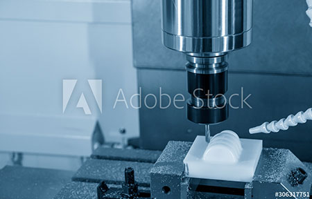
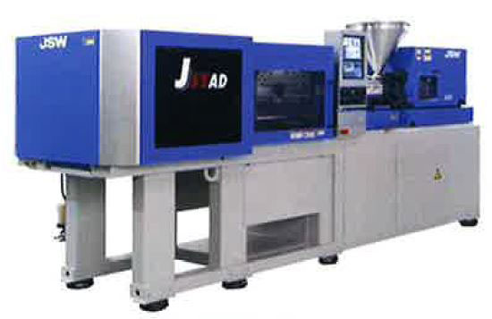

会社について・働く環境 ABOUT
- HOME
- 会社について・働く環境
キャリアをサポートし、人財を育む
～会社について・働く環境～
三光化成について
三光化成は、工業用精密プラスチック部品の開発から製造・出荷までを手がける製造メーカーです。幅広い分野のお客様と共に、これまで数多くのプラスチック製品・部品を世に送り出してきました。
当社がつくる製品・部品の数々は、精密機器から自動車、衛生・一般工業部品やOA・電子・IT機器まで、暮らしのさまざまな場面で活かされ、現代社会を支えています。三光化成の技術は、暮らしのとても身近なところに息づいているのです。
例えばこんな身近なところで……
特長
高度な開発・製造を実現する「一貫生産システム」
三光化成では、高度な技術力・製造力が求められる、難易度の高い精密プラスチック製品を生産しています。それを可能にしているのが、長年にわたり培ってきた成型技術・金型技術、そして卓越して解析技術、設計技術、そして積極的に導入を進めてきた最新の設備です。
当社ではこうした技術力・製造力を極限まで高め、余すことなくお客様とのものづくりに活かせるように、設計・解析、金型設計・製作から製品製造・評価、成形・加工・組立、検査・出荷までの一貫生産システムを構築。高品質の維持と、生産の合理化によるコスト削減や納期短縮を実現しています。
グローバルネットワークによる充実の生産体制
三光化成は、独自ネットワークによる高いグループ総合力を誇り、世界に目を向けた事業を展開している企業です。現在、国内に10拠点、海外に3拠点を構え、世界的なニーズに対応可能な生産体制を確立。業界に先駆けて、いち早くISO認証も取得しました。
働く環境について
社会人として、日本のものづくりを支える人材として成長・飛躍するためには、長く安心して働ける環境が必要不可欠です。安定した経営基盤を持つ当社では、大手企業にも迫る安定性・将来性と、中小企業ならではの柔軟性・サポートの細やかさ、その両方があります。みなさんのキャリアを、三光化成が全力でサポートします。
働くあなたをサポートする5つのポイント
- POINT ①バツグンの安定性と将来性
当社はもうすぐ、創立55周年を迎えます。長い歴史を経て三光化成は現在、国内10工場、海外3工場を展開。堅実に、順調に、業績を積み重ねています。実質的に無借金経営を実現しているため、経営面でみなさんを不安にさせることはありません。また、当社は幅広いお客様との取引があるため、営業面のバランスも良好。取引先の分野に偏りがなく、景気の波に左右されにくいことも会社としての大きな強みです。
- POINT ②休日が10日以上増えました
働き方改革を積極的に推進する当社では、直近の数年で休日を実に10日以上増やしました。2019年度には年間休日120日（一斉有給含む）と土日完全週休二日制を実現。さらに就業時間の短縮も実施しました。こうしてワークライフバランスを整えやすい環境をつくることは、社員のモチベーションアップにもつながっています。
- POINT ③働き方を選べます
-
全国各地に拠点を持つ当社では、原則として転勤の可能性があります。しかし、希望に応じて採用地域のみでの勤務も可能。また個々人の事情に合わせて、時短勤務や在宅勤務といった働き方についても柔軟に対応いたします。
キャリア面では、学歴に関わらず、能力・意欲次第で管理職へのキャリアアップが可能。さらに専門技術者を目指す道も。働き方もキャリアも、自分自身で選び取っていける環境です。
- POINT ④向上心を歓迎、全力で応援します
-
経験に応じて学べるように、新入社員、中堅社員、管理職それぞれに階層別研修を用意しております。業務面の教育についてはOJT（職場内研修）だけにとどまらず、Off-JT（職場外研修）にも注力。若手社員を中心に積極的に外部研修に参加してもらっています。もちろん研修にかかる費用は会社が全額負担し、業務時間内での参加が原則です。仕事に必要な資格であれば、取得のための費用補助もいたします。
- POINT ⑤充実の福利厚生
-
当社は産前産後・育児休業、介護休業制度の取得実績も多く、さらに多くの社員が休業後に元の職務に復帰しているという実績があります。また、年度内に取得できなかった有給休暇があれば残り分をストックしておき、思わぬ病気・ケガによる入院などの際に活用できる「積立有給休暇制度」もご用意。万が一のときも安心です。確定拠出型年金制度、従業員持株制度、会社による貸付金制度など、社員の暮らしをサポートする制度も充実。「交友会」による社員同士の交流も盛んです。
仕事内容について
製品製作の流れ
三光化成の製品は業界の垣根を越えて多くのお客様から評価をいただいています。自動車、鉄道、水回り…。みなさんの日常生活のどこかに必ず当社の製品が部品として生きているはずです。
- 【製品設計】どんな製品を作るか決めます
-
お客様の要望により、当社のノウハウをもとに製品そのものの設計を行ってニーズに応えます。
プラスチック製造のプロとしてお客様に積極的に提案を行います。
- 【金型設計・製造】製品の型を作ります
-
プラスチック製品は加熱して溶かした原料を金型に流し込み、冷え固めて作ります。
そのための金型の設計、製造を自社の金型工場で行います。
- 【生産管理】生産のスケジュールを立てます
-
お客様からの注文に応じて、適切な生産のスケジュールを作成します。
樹脂原料の手配や成形機の稼働状況確認などはもちろん、他部署と常に連携して進めることが大事です。
- 【成形】製品を量産します
-
試作品がOKになったら、いよいよ量産です。
金型を成形機にセットし、正確に早く機械を稼働させます。
お客様が要望する納期に合わせ、受注数を生産します。
- 【品質管理】できた製品をチェックします
-
製品作りに寸法や外観上の不良品発生は避けられません。
重要なのは、不良の原因を突き止めて再発を防ぐことです。
様々な機械や器具を駆使し、品質を厳しくチェックします。
- 【設備管理】製造をスムーズに
-

人の手を省いて効率を上げるため、さまざまな自動設備を社内で自作しています。
検査装置、梱包機、運搬機…などなど。
機械好きなあなたの力が発揮できます。
- 【検査・加工・組立】
-
出荷前に不良品が入っていないか厳密にチェックします。
また、製品によっては自社内で加工や組み立ても行います。
- 【出荷・納品】
お客様へ届けます
職種紹介
三光化成では、どのような現場で、どのような仕事をする人たちが活躍しているのか？ ここでは、代表的な職種を紹介します。
製造技術・成形
当社が主に行っている射出成形は、溶かしたプラスチック樹脂原料を金型内に流し込み（射出）、冷え固めて形をつくる（成形）というもの。これは、プラスチック製造における代表的な製法です。
三光化成は創業以来50年以上、射出成形技術を磨き上げ、それによって多くのお客様からの信頼を獲得し、今日まで成長してきました。入社後はまず射出成形機の操作やそれに付随する業務を習得していただきます。
成形作業は機械に任せておけばいい……と思われるかもしれませんが、実際はそれほど単純ではありません。なぜなら、原料の射出速度、温度、圧力、金型の状態といった条件が少し変わるだけで、製品の仕上がりが大きく変わってくるからです。決して難易度は低くなく、知識と経験が問われる世界。ただその分、非常に奥深く、ものづくりの面白さを存分に味わっていただけるでしょう。
-
製品仕様に合わせ、射出成形の条件（温度、圧力など）を細かく設定。
-
成形後、丁寧に製品をチェックし、不良の有無を確認。
-

当社で使用している代表的な射出成形機の一つです。金型を閉じ込める力（型締め力）が最も大きい850tクラスのものは、ゆうに電車の車両一両分くらいの大きさがあります。
射出成形技能士は国家資格です！
当社では120名以上の社員が射出成形技能士の資格を取得しています。これは国が認めた資格であり、当社社員の技術力の高さを証明しています。自分を高めるためにも、ぜひ資格取得にチャレンジしてみてください。
検査・品質管理
どれだけ綿密にプランを練って、丁寧に製品づくりを進めても、その過程で不良品が出るリスクは避けられません。大切なことは、不良品が出た場合に原因をしっかり明らかにすること。そして、決して不良品をお客様のものへ届けないことです。これを徹底してきたからこそ、多くのお客様が当社を信頼し、さまざまなご依頼を寄せてくださっています。
こうした信頼を守っているのが、製造開始から出荷までのあらゆる工程で的確に行う検査。サイズ違い、形状違い、異物の混入など、多種多様な不良が想定されますが、どのような不良も見逃さないよう、当社が誇る最新鋭の設備とプロフェッショナル人材の力で、精度の高い検査を実施しています。経験と集中力を要する工程ですが、エキスパートとなれるよう少しずつ覚えていきましょう。機械検査や品質管理検定といった公的資格の取得も目指せます。
-
ミリ単位以下の精度が要求される寸法（サイズ）は、顕微鏡や三次元測定機などの機械を用いて計測します。
-

最後はアナログ。やはり人の目による確認が重要です。コツを覚えれば検査のスピードも上がるはずです。